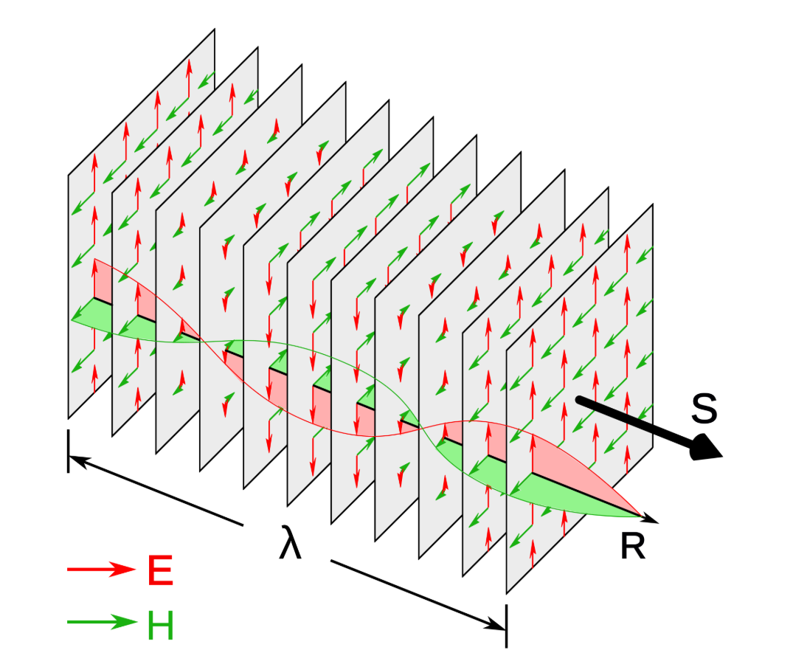
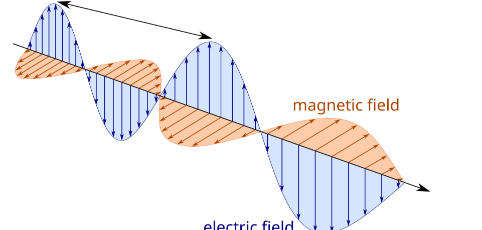
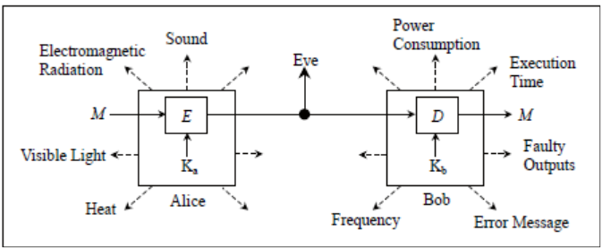
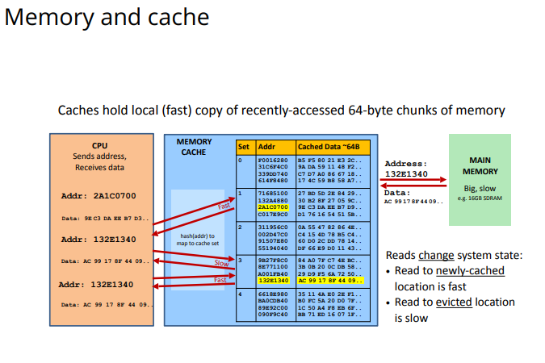

30609 김재현
평소 정보보안 분야에 관심이 있어 다양한 해킹 기법을 조사하던 중, 컴퓨터에서 발생하는 전자기파를 분석하여 정보를 알아낼 수 있다는 사실을 알게 되었습니다.
이를 통해 물리학Ⅱ에서 배우는 전자기파 개념이 실제 정보보안과 직접 연결된다는 점에 흥미를 느껴 이 주제를 선정하였습니다.


컴퓨터 내부의 데이터를 직접 해킹하는 것이 아니라, 전자기파와 같은 물리적 정보를 분석하여 암호키나 비밀번호를 추정하는 공격입니다.

컴퓨터 모니터에서 방출되는 전자기파를 수신하여 멀리서도 화면 내용을 복원할 수 있다는 사실을 증명한 대표적인 사례입니다.
군사기관과 정부기관에서는 전자기파를 통한 정보 유출을 막기 위해 전자파 차폐 기술과 TEMPEST 보안 기준을 적용합니다.

AI 기반 탐지
양자암호 기술
보안 칩 개발
앞으로는 AI 기반 이상 탐지 기술, 양자암호 기술이 함께 발전하여 사이드 채널 공격을 더욱 효과적으로 방어할 것으로 전망됩니다.
이번 탐구를 통해 정보보안은 단순히 프로그램만 보호하는 기술이 아니라, 물리학의 원리까지 활용하는 융합 학문이라는 점을 알게 되었습니다. 특히 물리학Ⅱ에서 배우는 전자기파의 발생과 전파, 반사와 감쇠 개념이 실제 정보 유출 공격에 이용될 수 있다는 점이 매우 인상 깊었습니다. 앞으로 정보보안 분야에서는 소프트웨어뿐 아니라 물리학적 보안 기술도 중요해질 것이라고 생각합니다.
참고자료